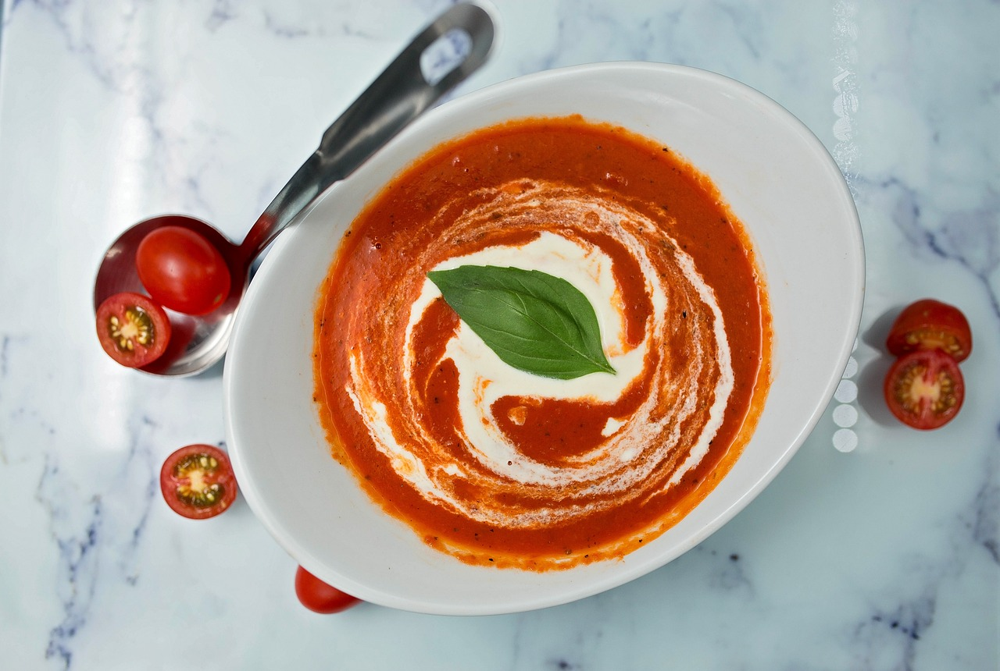

Vegetariska Förrätter
Krämig svamptoast
- 200 g svamp
- 2 skivor bröd
- 1 dl crème fraiche
- 1 msk hackad dill eller gräslök
- 1 syrlig gurka, tunt skivad
- salt och peppar
Rotfruktssallad

- 500 g rotfrukter
- 150 g getost, smulad
- 1 msk olivolja
- 1 tsk honung
- salt och peppar
- Ruccolasallad
Tomattartar

- 3 stora tomater, tärnade
- 125 g mozzarellaost
- 1 msk olivolja
- 1 msk balsamvinäger
- Färsk basilika
- salt och peppar
Bakad Blomkål

- 1 stort blomkålshuvud
- 150 g smulad fetaost
- 1/2 dl valnötter, grovt hackade
- 1 msk färsk persilja
- 2 msk olivolja
- salt och peppar
Vegetariska Varmrätter
Pasta med pesto

- 200 g pasta
- 250 g grönsaker
- 1 burk pesto
- 1 msk olivolja
- Parmesanost
- salt och peppar
Tomatsoppa

- 400 g krossade tomater
- 1 grönsaks buljongtärning
- 1 mozzarellaost
- 1 kruka basilika
- olivolja
- salt och peppar
Avokado och räksmörgås

- 2 avokado
- 150 g räkor
- 1 lime, saften
- 1 kruka koriander
- 4 skivor bröd
- salt och peppar
Vegetarisk Pizza

- 1 färdig pizzadeg
- 400 g blandade svampar
- 1 burk pesto
- 150 g getost, smulad
- 2 vitlöksklyftor
- 2 msk olivolja, eve lite ruccola till servering
 Hälsosamt
Lättlagat
Vegetariskt
Matlagningstips
Hjälp
Hälsosamt
Lättlagat
Vegetariskt
Matlagningstips
Hjälp